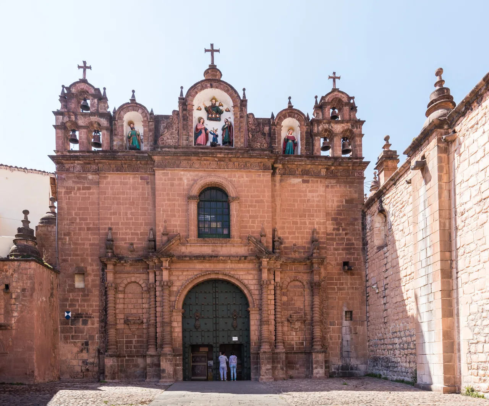
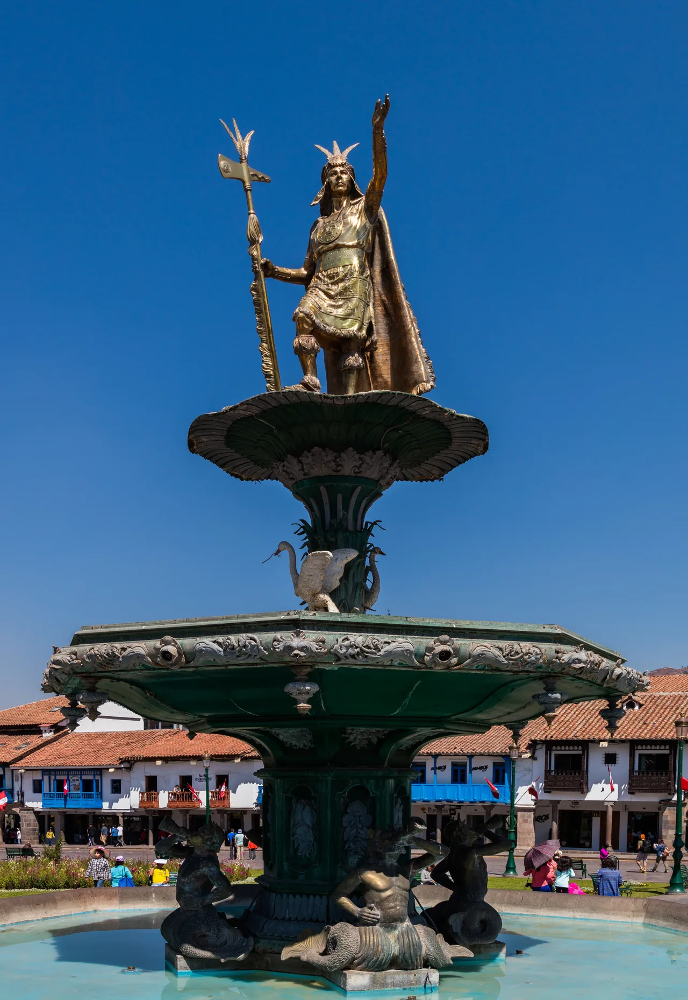

En la plaza mayor latinoamericana, el bronce solemne de las campanas de la catedral convive desde hace siglos con el pregón callejero, el silbato del afilador y la protesta ciudadana. Una indagación sobre la acústica de la plaza, el derecho a la escucha y la fundación sonora del espacio público.
Ángel Rama demostró en su ensayo luminoso La ciudad letrada que la colonización española en América fue, antes que un despliegue militar sobre el terreno, un ejercicio implacable de geometría sobre el papel. Antes de que se levantara la primera pared de adobe o se talara el primer árbol del bosque, los fundadores trazaban con regla y cordel una cuadrícula rígida de calles perpendiculares que confluían en un vacío monumental en el centro exacto del plano: la plaza mayor. En esa explanada desierta se instalaron los símbolos visibles del poder colonial —el palacio de gobierno, el cabildo de los regidores y la catedral con sus torres solemnes—, destinados a recordar a la población conquistada que el orden terrenal y el divino pertenecían a la corona.

Pero si la arquitectura colonial pretendió imponer un orden visual mudo e inmutable, la vida concreta de las ciudades americanas subvirtió ese mandato a través del sentido más rebelde y difícil de gobernar: el oído. La plaza no es únicamente un trazado de piedras y soportales para ser admirado en perspectiva; es un teatro acústico formidable, una cámara de resonancia a cielo abierto donde chocan, se mezclan y disputan la hegemonía sensorial las distintas voces que componen el drama social de nuestras ciudades.
En lo alto de las torres de la iglesia descansaban las campanas de bronce fundidas con metal enriquecido con plata de las minas virreinales. La campana era el reloj acústico del Estado teocrático, el instrumento que ordenaba la jornada entera de la población desde leguas a la distancia: el toque de maitines al despuntar el alba, el tañido solemne del ángelus al mediodía que obligaba a quitarse el sombrero en señal de sumisión, el doblar fúnebre por los muertos ilustres y el rebato frenético ante incendios o invasiones militares. Quien escuchaba la campana quedaba automáticamente bajo la jurisdicción de la parroquia y de la ley.
Y sin embargo, abajo, sobre el empedrado de la plaza, florecía una orquesta profana de voces que ninguna campana eclesiástica logró jamás acallar. Desde las primeras luces de la mañana, la plaza se transformaba en mercado popular, y el aire se llenaba con la cadencia de los pregones callejeros: el aguatero anunciando el agua dulce del río, la vendedora de tamales cantando las bondades del maíz caliente, el yerbatero ofreciendo remedios para el mal de amores y el dolor de huesos, y el afilador de cuchillos haciendo sonar su flauta de pan de plástico con una escala ascendente que todos los vecinos aprendían a reconocer desde la infancia.
El sociólogo Richard Sennett ha subrayado que el espacio público sólo existe verdaderamente cuando los seres humanos aceptan exponerse a la presencia y al sonido de los extraños, cuando los cuerpos renuncian a la comodidad del encierro privado para encontrarse en la fricción enriquecedora de la plaza. En la plaza latinoamericana ese encuentro acústico ha sido siempre un espacio de resistencia cívica. Fue en la Plaza de Mayo de Buenos Aires donde las Madres marcharon en silencio alrededor de la pirámide central, transformando el mutismo de sus cuerpos en el grito más estremecedor contra el terrorismo de Estado; fue en la Plaza de Armas del Cusco o de Lima donde los campesinos hicieron resonar sus pututos de caracol marino para exigir el respeto a sus tierras comunales.

Con la llegada del siglo veinte y la masificación del automóvil particular, el urbanismo modernista intentó destruir la acústica de la plaza pública, convirtiendo las viejas explanadas peatonales en glorietas de tránsito congestionadas por el tráfico vehicular, el chirrido de los frenos y el estruendo de los motores de combustión. Al ahogar la voz humana bajo el ruido del transporte privado, el poder moderno logró lo que la inquisición virreinal nunca pudo: desarmar la posibilidad de la conversación cívica y empujar a los ciudadanos al aislamiento de sus hogares.
Pero en las ciudades que supieron defender sus centros históricos y peatonalizar sus plazas, el milagro acústico sigue repitiéndose cada tarde. Cuando baja el sol y las palomas vuelan en círculos sobre los tejados, la plaza se llena de jubilados que debaten de política sentados en los bancos de hierro forjado, de parejas de enamorados que conversan en voz baja bajo los soportales, de cantantes populares que afinan una guitarra criolla sin micrófonos y de niños que corretean detrás de un balón de fútbol.
En ese rumor continuo y benévolo —que no es silencio muerto ni ruido ensordecedor, sino el murmullo vivo de la comunidad que se reconoce a sí misma en el aire compartido— late la más hermosa lección de la plaza abierta: la certeza de que una sociedad verdaderamente democrática no se mide por la altura de sus rascacielos corporativos ni por la velocidad de sus autopistas elevadas, sino por la capacidad de sus plazas de albergar la voz de todos sus habitantes sin que ninguna quede silenciada.
Fuentes.
- Rama, Ángel (1984). La ciudad letrada: El orden de los signos y el poder urbano. Ediciones del Norte.
- Sennett, Richard (1994). Carne y piedra: El cuerpo y la ciudad en la civilización occidental. Alianza.
- Jacobs, Jane (1961). Muerte y vida de las grandes ciudades: El ballet de la acera y la plaza. Capitán Swing.
Investigación sobre historia urbana, sociología del sonido y espacio público en América Latina.
Fuentes consultadas el 19.11.2026. Análisis e interpretación: RUMMOR. Edición privada para revisión.